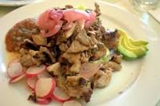

.jpg)

Cochinita Pibil: Uno de los platos más famosos de la región. Consiste en cerdo marinado en una mezcla de achiote, jugo de naranja agria y otras especias, envuelto en hojas de plátano y cocido lentamente bajo tierra en un horno de barro.
La gastronomía de Yucatán es una deliciosa fusión de sabores prehispánicos mayas con influencias españolas y de otras culturas que se han mezclado a lo largo del tiempo. Aquí te presento algunos platillos típicos:
Cochinita Pibil: Uno de los platos más famosos de la región. Consiste en cerdo marinado en una mezcla de achiote, jugo de naranja agria y otras especias, envuelto en hojas de plátano y cocido lentamente bajo tierra en un horno de barro.

Poc Chuc: Filete de cerdo marinado en jugo de naranja agria y achiote, asado a la parrilla y servido con cebolla morada encurtida y tortillas calientes.
.jpg)
Panuchos y Salbutes: Ambos son antojitos yucatecos hechos con tortillas de maíz fritas. Los panuchos están rellenos de frijoles refritos y cubiertos con pollo, carne de cerdo o pavo, cebolla morada y aguacate. Los salbutes se sirven con carne de pavo o pollo, lechuga, jitomate, cebolla y aguacate.
.jpg)
Sopa de Lima: Una sopa reconfortante hecha con caldo de pollo, jugo de lima, pollo deshebrado, trozos de tortilla frita y cilantro.
.jpg)
Relleno Negro: Este plato consiste en carne de pavo cocida en una salsa hecha con chiles quemados, especias y achiote, lo que le da su característico color oscuro.
.jpg)
Ceviche de Sierra: Un ceviche típico de Yucatán hecho con pescado sierra marinado en jugo de limón con cebolla morada, tomate, chile habanero y cilantro.
.jpg)
Marquesitas: Un postre popular en las calles de Yucatán. Consiste en una delgada crepa de harina de trigo rellena de queso Edam y dulce de leche.